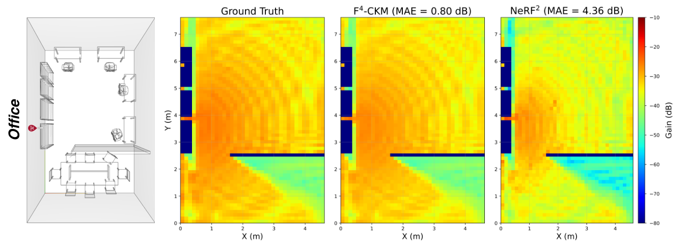
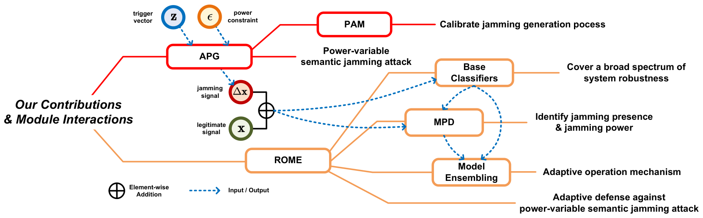
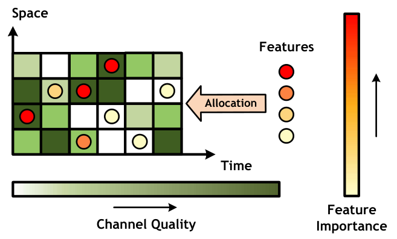

IEEE TCOM2026
F4-CKM: Learning Channel Knowledge Map With Radio Frequency Radiance Field Rendering
Adapts radiance field rendering to predict wireless channels across space and frequency.
Code

PhD Candidate in Information and Communication Engineering
Zhejiang University
At Zhejiang University, I study channel knowledge maps and semantic communication at the Intelligent Communication Network and Security Institute (IICNS) under the supervision of Prof. Yunlong Cai and Prof. Guanding Yu.
Since October 2026, I have been a visiting PhD student at Imperial College London, where Prof. Deniz Gündüz supervises my research in the Information Processing and Communications Lab (IPC-Lab).
How can a radio learn the geometry of its surroundings? I use radio-frequency radiance fields to predict how a wireless channel will behave.
When channel quality varies, which features should a transmitter protect? I study how to allocate features across antennas and time, and how to recover meaning under interference.
Adapts radiance field rendering to predict wireless channels across space and frequency.
Code
Adjusts a receiver’s model ensemble to the strength of interference so it can recover the transmitted content.

Matches important image features to reliable transmission opportunities across space and time.

K. Zhou, G. Zhang, H. Li, Y. Cai, S. Liu, G. Yu
K. Zhou, G. Zhang, Y. Cai, Q. Hu, G. Yu
Z. Zhao, K. Zhou, Z. Ye, S. Liu, Y. Cai, G. Yu
H. Zhang, K. Zhou, S. Liu, Y. Cai, G. Yu
K. Zhou, G. Zhang, H. Li, Y. Cai, G. Yu
H. Li, G. Zhang, K. Zhou, Y. Cai, G. Yu
K. Zhou, G. Zhang, Y. Cai, Q. Hu, G. Yu, A. Lee Swindlehurst
G. Zhang, K. Zhou, Y. Cai, Q. Hu, G. Yu
K. Zhou, G. Zhang, Y. Cai, Q. Hu, G. Yu
K. Zhou, G. Zhang, Y. Cai, Q. Hu, G. Yu
Visiting PhD Student
Imperial College London · Oct 2026–present
PhD studies in Information and Communication Engineering
Zhejiang University · Sep 2023–present
Bachelor’s degree in Information Engineering
Zhejiang University · Sep 2019–Jun 2023
TPC member · IEEE ICC, VTC-Spring
Conference reviewer · GLOBECOM (4), ICC (2), WCNC (1), ISAC (1), VTC-Spring
Journal reviewer · IEEE TCOM, TCCN
Conference reviewer · IEEE/CIC ICCC (2), WCNC (1), GLOBECOM (1)
Journal reviewer · IEEE TCOM, IEEE Access
Conference reviewer · IEEE PIMRC (1)
Journal reviewer · IEEE Access, IEEE JSAC special issue on Next Generation Advanced Transceiver Technologies (9)
Conference reviewer · IEEE VTC-Fall